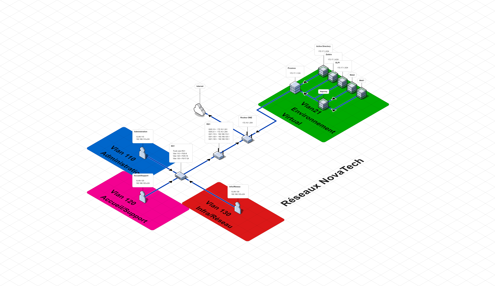

I. Présentation : NovaTech IT
NovaTech IT est une entreprise spécialisée dans les services d'hébergement, les solutions IT et l'infogérance[cite: 6, 7, 95, 96]. L'organisation s'appuie sur une structure technique solide pour garantir la haute disponibilité des services[cite: 17, 120].
Pôle Infrastructure & Réseau
- John B. (Responsable Infrastructure) [cite: 10, 99]
- Nohan H. (Technicien Réseau) [cite: 10, 101]
- Nicolas A. (Technicien Réseau) [cite: 10, 102]
Support & Administratif
- Accueil & Support : Élodie C. & Thomas S. [cite: 11, 108, 109]
- Administratif : Maya L. & Karim H. [cite: 10, 104, 106]
II. Architecture & Plan d'Adressage
L'infrastructure est segmentée en plusieurs réseaux virtuels (VLANs) afin d'isoler les flux administratifs, techniques et les services exposés en DMZ[cite: 14, 112, 127, 136].

| VLAN | Rôle | Réseau IP | Passerelle |
|---|---|---|---|
| 110 | Clients Administratif [cite: 31, 136] | 192.168.110.0/24 [cite: 31, 136] | 192.168.110.1 [cite: 32, 136] |
| 120 | Accueil & Support [cite: 33, 136] | 192.168.120.0/24 [cite: 33, 136] | 192.168.120.1 [cite: 35, 136] |
| 130 | Infrastructure & Réseau [cite: 36, 136] | 192.168.130.0/24 [cite: 36, 136] | 192.168.130.1 [cite: 37, 136] |
| 21 | Services DMZ (Exposés) [cite: 38, 136] | 172.17.1.0/24 [cite: 38, 136] | 172.17.1.254 [cite: 39, 136] |